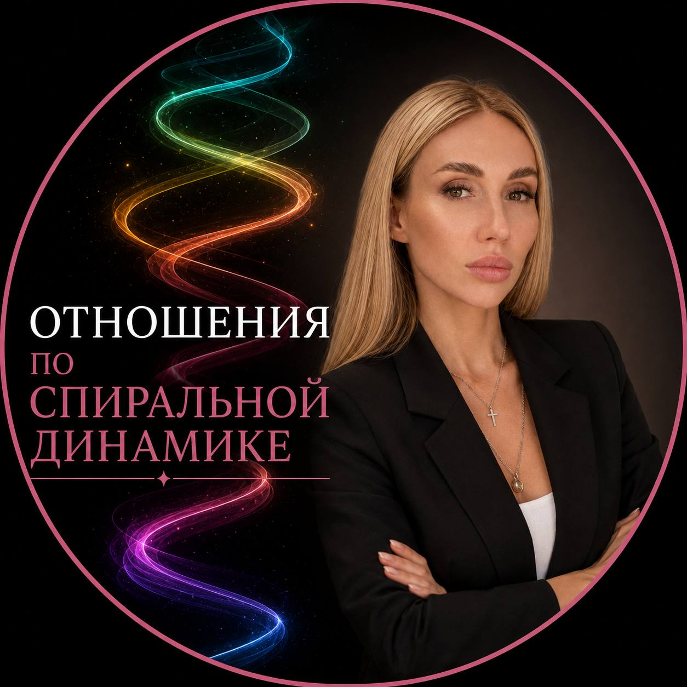

То, что для вас означает любовь, для партнёра может означать давление.
Александра Андриянова · трансформационный тренер
25 августа в 19:00 по Москве
Бесплатный эфир Александры Андрияновой

Кому это
Иногда два человека действительно хотят быть вместе, но строят отношения из совершенно разных внутренних систем.
Именно это мы будем разбирать на эфире.
Разрыв
Представьте, что вы уже хотите близости, честного диалога, свободы внутри пары и совместного развития.
А ваш партнёр сейчас занят совершенно другими задачами: заработать достаточно денег, почувствовать безопасность, доказать свою силу, удержать контроль или соответствовать представлению о том, какой должна быть «правильная семья».
Вы смотрите на одни отношения, но видите их совершенно по-разному.
То, что для вас означает любовь, для партнёра может означать давление.
То, что он считает заботой, вы можете воспринимать как контроль.
То, что для вас является свободой, у него может вызывать ощущение, что отношения разваливаются.
Спиральная динамика показывает, из какого уровня каждый из вас строит отношения сейчас и где именно между вами возникает разрыв.
Карта
Главный вопрос пары: как справиться с жизнью, деньгами и базовой безопасностью.
«Мы должны быть всегда вместе», поэтому дистанция переживается как угроза отношениям.
В паре много контроля, ревности, давления, борьбы и попыток определить, кто главный.
Отношения держатся на обязательствах, семье, детях и представлении о том, как «правильно».
На первый план выходят деньги, статус, цели, развитие и результат, а отношения легко превращаются в ещё один совместный проект.
Появляется глубокое понимание и принятие, но иногда вместе с конфликтами исчезает и сексуальное напряжение.
Два самостоятельных человека выбирают быть вместе, сохраняя себя, свои цели и свободу.
Пара объединяется вокруг чего-то большего: семьи, дела, детей, творчества, влияния или общего вклада в мир.
Пример
Вы можете находиться, например, на зелёном уровне и хотеть от партнёра эмоциональной глубины, разговоров и настоящего контакта.
А он в этот момент находится в оранжевом и искренне считает, что сейчас главное заработать, решить задачи и обеспечить семью.
Вы оба можете вкладываться в отношения и при этом постоянно разочаровываться друг в друге.
Программа
Вторая часть
Во второй части эфира Александра возьмёт ситуации участников и прямо на них покажет:
где находится каждый человек → из-за чего происходит дисконнект → что с этим можно сделать дальше.
Вы сможете написать свою ситуацию и попасть в разбор.
После эфира
После эфира вы сможете посмотреть на свои отношения как на систему и понять, что происходит между вами сейчас, куда вы можете двигаться дальше и какой разговор вам действительно пора провести.
25 августа, 19:00 по Москве
Участие бесплатное.